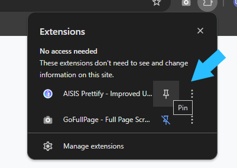

Pinned extensions are easier to access. Click the puzzle icon (top-right of Chrome), then click the pin 📌 next to AISIS Prettify.

🎉 500 Installs! Thank you, fellow Ateneans, for supporting AISIS Prettify.
Your feedback and encouragement keep this project going strong. Here’s to making AISIS better for all of us! 🦅
🎉 Welcome to AISIS Prettify!
Hi there, fellow Atenean! 🦅
Thanks for installing AISIS Prettify — an extension made by a fellow Atenean to make AISIS more enjoyable and less of a headache to use.
✨ What’s inside?
🏠 Improved Home Layout – Cleaner and more organized dashboard.
🔑 Better Login Page – Friendlier and faster to get you where you need to go.
📅 Improved Class Schedule Layout – Blocked classes shown clearly.
🔍 Class Filters – Filter by professor and language.
📂 Sorted CAT Dropdown – Find your class faster.
📊 Grade Calculator Button – Pulls your grades and opens a calculator page (website by Alexi).
🗂 Enlistment Planner Button – Gets your program and helps you plan classes for next sem (website by Alexi).
💡 Did you know? The popup menu for AISIS Prettify lets you toggle off any feature if you don’t like it or if something breaks.
Message me on Facebook so I can fix it ASAP: Contact Gelo
📌 Tip: The Firefox version is also available on
GitHub.
💙 About the project
Created by Gelo Funelas based on the work of Prof. Ian De La Cruz, with extra features built in collaboration with Alexi, to help fellow students save time and frustration when using the student portal.
🔎 Secrets?
💥 I will destroy AISIS – Turn off "Pretty Site Map" and "Pretty Navbar" in the settings and see what happens if you input the Konami Code.
🎯 CarpalTunnel / Umapyoi? – Enter this on your keyboard and prepare to aim.